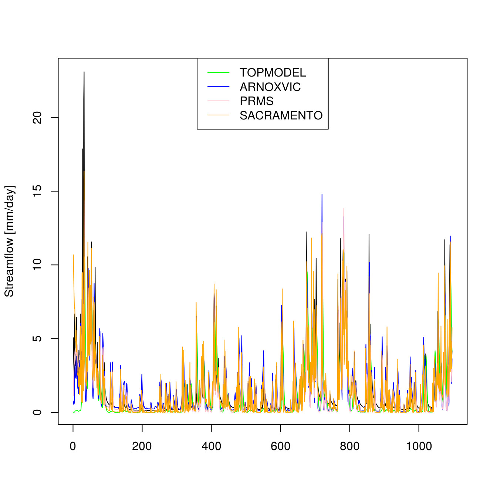

fuse: Framework for Understanding Structural Errors
Claudia Vitolo
2018-08-09
Source:vignettes/fuse_vignette.Rmd
fuse_vignette.RmdIntroduction
The fuse modelling framework takes as input rainfall and potential evapotranspiration time series (areal averages over the river catchment area) and returns a simulated time series of river discharges. It can be used to understand the variability of expected hydrological responses based on model structures.
This package is an implementation of the framework for hydrological modelling FUSE described in Clark et al. (2008) and based on the Fortran code provided by M. Clark in 2011. The package consists of two modules: Soil Moisture Accounting module (fusesma.sim) and Gamma routing module (fuserouting.sim). It also contains default parameter ranges (fusesma.ranges and fuserouting.ranges) and three data objects: fuse_hydrological_timeseries (sample input dataset), parameters (sample parameters) and modlist (list of FUSE model structures).
Dependencies
The fuse package, as well as the examples in this vignette, depend on a number of CRAN packages. Check for missing dependencies and install them:
Data and parameters
Load sample data (daily time step)
Define parameter ranges
DefaultRanges <- data.frame(t(data.frame(c(fusesma.ranges(),
fuserouting.ranges()))))
names(DefaultRanges) <- c("Min", "Max")Sample parameter set using Latin Hypercube method
numberOfRuns <- 100
parameters <- tgp::lhs( numberOfRuns, as.matrix(DefaultRanges) )
parameters <- data.frame(parameters)
names(parameters) <- row.names(DefaultRanges)Alternatively, sample parameter set using built-in function
Example usage with 1 model structure
Define the model to use, e.g. TOPMODEL (MID = 60)
Use the built-in function to run FUSE for the 1st sampled parameter set
streamflow <- fuse(fuse_hydrological_timeseries, myMID, myDELTIM, parameters[1,])
plot(streamflow, xlab = "", ylab = "Streamflow [mm/day]")Run FUSE for all the sampled parameter sets
plot(fuse_hydrological_timeseries$Q, type = "l",
xlab = "", ylab = "Streamflow [mm/day]")
for (i in 1:dim(parameters)[1]){
lines(zoo::zoo(fuse(DATA = fuse_hydrological_timeseries,
mid = myMID,
deltim = myDELTIM,
ParameterSet = parameters[i,]),
order.by = zoo::index(fuse_hydrological_timeseries)),
col = "gray", lwd = 0.1)
}
lines(fuse_hydrological_timeseries$Q, col = "black")Ensemble modelling
Define a group of model structures to use
Run a multi-model calibration using the Nash-Sutcliffe efficiency as objective function
indices <- rep(NA, 4*dim(parameters)[1])
discharges <- matrix(NA, ncol = 4*dim(parameters)[1], nrow = dim(fuse_hydrological_timeseries)[1])
kCounter <- 0
for (m in 1:4){
myMID <- mids[m]
for (pid in 1:dim(parameters)[1]){
kCounter <- kCounter + 1
Qrout <- fuse(DATA = fuse_hydrological_timeseries,
mid = myMID,
deltim = myDELTIM,
ParameterSet = parameters[pid, ])
indices[kCounter] <- qualV::EF(fuse_hydrological_timeseries$Q, Qrout)
discharges[, kCounter] <- Qrout
}
}Compare results
bestRun <- which(indices == max(indices))
numberOfRuns <- dim(parameters)[1]
bestModel <- function(runNumber){
if (runNumber < (numberOfRuns + 1)) myBestModel <- "TOPMODEL"
if (runNumber > (numberOfRuns + 1) &
runNumber < (2*numberOfRuns + 1)) myBestModel <- "ARNOXVIC"
if (runNumber > (2*numberOfRuns + 1) &
runNumber < (3*numberOfRuns + 1)) myBestModel <- "PRMS"
if (runNumber > (3*numberOfRuns + 1) &
runNumber < (4*numberOfRuns + 1)) myBestModel <- "SACRAMENTO"
return(myBestModel)
}
bestModel(bestRun)
#> [1] "SACRAMENTO"
plot(zoo::coredata(fuse_hydrological_timeseries$Q), type = "l", lwd=0.5,
xlab = "", ylab = "Streamflow [mm/day]")
for(pid in 1:(4*numberOfRuns)){
lines(discharges[, pid], col = "gray", lwd = 3)
}
lines(zoo::coredata(fuse_hydrological_timeseries$Q), col = "black", lwd = 1)
lines(discharges[, bestRun], col = "red", lwd = 1)
How the best simulation of each model structure compare to each other?
bestRun0060 <- which(indices[1:numberOfRuns] == max(indices[1:numberOfRuns]))
bestRun0230 <- numberOfRuns +
which(indices[(numberOfRuns+1):(2*numberOfRuns)] ==
max(indices[(numberOfRuns+1):(2*numberOfRuns)]))
bestRun0342 <- 2*numberOfRuns +
which(indices[(2*numberOfRuns+1):(3*numberOfRuns)] ==
max(indices[(2*numberOfRuns+1):(3*numberOfRuns)]))
bestRun0426 <- 3*numberOfRuns +
which(indices[(3*numberOfRuns+1):(4*numberOfRuns)] ==
max(indices[(3*numberOfRuns+1):(4*numberOfRuns)]))
plot(zoo::coredata(fuse_hydrological_timeseries$Q), type = "l", lwd=1,
xlab = "", ylab = "Streamflow [mm/day]")
lines(discharges[, bestRun0060], col = "green", lwd = 1)
lines(discharges[, bestRun0230], col = "blue", lwd = 1)
lines(discharges[, bestRun0342], col = "pink", lwd = 1)
lines(discharges[, bestRun0426], col = "orange", lwd = 1)
legend("top",
c("TOPMODEL", "ARNOXVIC", "PRMS","SACRAMENTO"),
col = c("green", "blue", "pink", "orange"),
lty = c(1, 1, 1, 1))
Use fuse with hydromad
Hydromad is an excellent framework for hydrological modelling, optimization, sensitivity analysis and assessment of results. It contains a large set of soil moisture accounting modules and routing functions. Thanks to Joseph Guillaume (hydromad’s maintainer), fuse is now compatible with hydromad and below are some examples Joseph provided to use fuse within the hydromad environment.
# Install and load hydromad
install.packages(c("zoo", "latticeExtra", "polynom", "car",
"Hmisc", "reshape", "DEoptim", "coda"))
install.packages("dream", repos="http://hydromad.catchment.org")
install.packages("hydromad", repos="http://hydromad.catchment.org")
library(hydromad)
# Load fuse and an example dataset
library(fuse)
data(fuse_hydrological_timeseries)
# Set the parameter ranges using hydromad.options
hydromad.options(fusesma = fusesma.ranges(),
fuserouting = fuserouting.ranges())
# Set up the model
modspec <- hydromad(fuse_hydrological_timeseries,
sma = "fusesma",
routing = "fuserouting",
mid = 1:1248,
deltim = 1)
# Randomly generate 1 parameter set
myNewParameterSet <- parameterSets(coef(modspec, warn=FALSE),1,method="random")
# Run a single simulation using the parameter set generated above
modx <- update(modspec, newpars = myNewParameterSet)
# Generate a summary of the result
summary(modx)
# The instantaneous runoff is
U <- modx$U
# The routed discharge is
Qrout <- modx$fitted.values
# Plot the Observed vs Simulated value
hydromad:::xyplot.hydromad(modx)
# Add the precipitation to the above plot
hydromad:::xyplot.hydromad(modx, with.P=TRUE)
# Calibrate FUSE using hydromad's fitBy method and the Shuffled Complex Evolution algorithm
modfit <- fitBySCE(modspec)
# Get a summary of the result
summary(modfit)With hydromad is also possible to perform a thorough model assessment using basic statistics as well as summary plots. There is also a wide set of tools for calibration and a suite of other utility functions. The reader should refer to the official website and documentation for more details.
Other packages and future developments
The fuse package could in future be submitted to CRAN and included in the Task View dedicated to Analysis of Ecological and Environmental Data (Envirometrics). This already includes a number of packages for hydrological modelling such as topmodel, dynatopmodel and wasim. These packages only implement a single model structures,while fuse would complement them providing a framework for ensemble modelling. Hydromad also implements ensemble modelling but it is not currently on CRAN.
A new version of the fuse Fortran code was recently released on GitHub. Fortran users are advised to refer to this latest version of fuse. This package is not an interface for the latest Fortran code but any contribution in this direction is welcome.